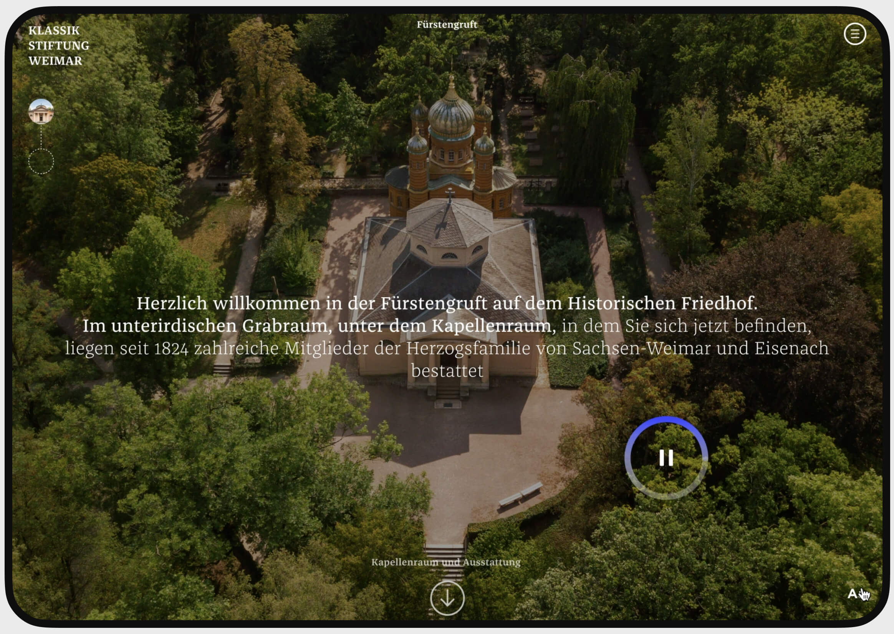

Digital interactive tour guide for cultural institutions
The objective of this project was to develop an engaging audiovisual prototype, enabling users to immerse themselves in the history of a particular place or event. Leveraging the resources provided by Klassisch Stiftung Weimar, a range of audio guides covering diverse historical sites was thoroughly examined. The analysis aimed to categorize various subtopics, forming the foundation for an interactive storytelling experience.
The outcome of this effort materialized in the creation of a distinctive platform. This platform empowers users to navigate through an interactive guide with direct control over their exploration. The newly designed audio guide offers users unparalleled flexibility to delve into topics in-depth, eliminating the need to scroll back along a timeline.
Introduction page showing the basic UI Elements with audio settings.
As the users continue listening to the story, images and associated descriptions of the historical sites follow.
First virtual branching of the storytelling allowing the users to choose whether deepen a particular aspect of the story, such as in this particular case a statue, or continue with the main audio path.

Infographics such as pictograms, maps or plans complement the audio explanation.
Next project - Interactive Podcast